BearingsBuilding the design system for a group road-trip planner.

- Role
- Product Designer
- Team
- 4 designers + a lead
- Timeline
- 5 weeks
- Recognition
- Audience Choice Award
- Year
- 2026
Bearings is a group road-trip planner for iOS. It turns trip planning from a one-person job into something the whole group shapes together, from the first idea to the final route.
I led the visual design and built the system.
Early on, I proposed making Bearings a group-focused road-trip planner, which narrowed our audience and gave the concept a sharper focus. I created the user interview questions, helped with ideation, and made tons of drafts in both lo-fi and hi-fi before jumping into the final designs. From there, I led the visual design. I built the design system and a set of shared components so the team could move fast and keep every screen feeling like one product, and I set the type, spacing, and sizing that held it all together. I designed the logo and most of the assets, and I designed 28 of the final screens, including onboarding, the home page, building a trip, and the My Trips hub. I often jumped in to help teammates finalize their screens against the system.
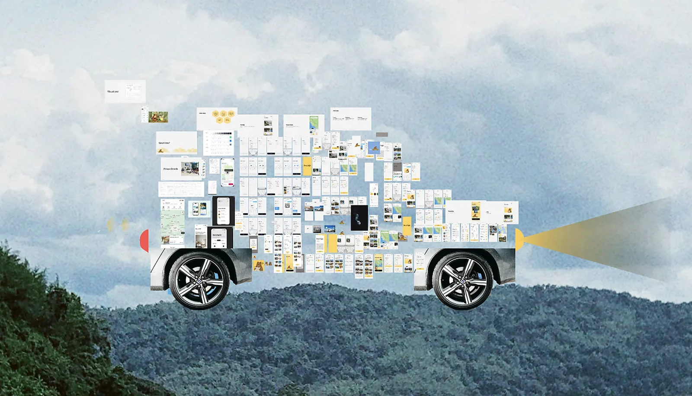
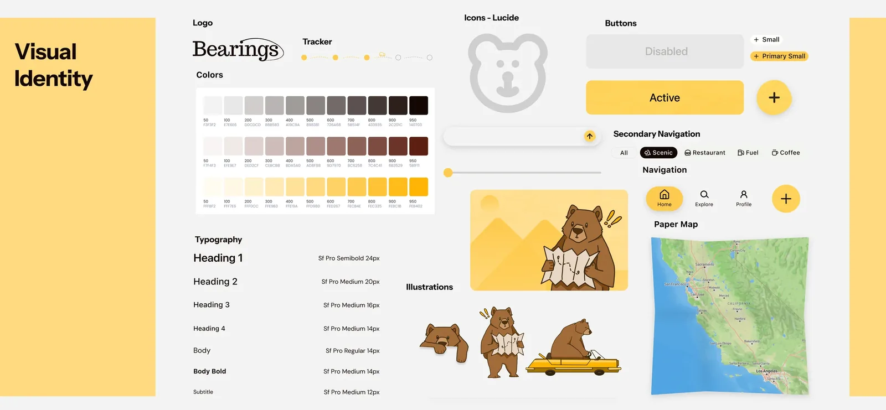
Road trips are fun. Planning them isn't.
The best part of a road trip is the drive. The worst part is everything before it: the group chat where everyone drops a place to stop, the note with the budget, the open tabs for gas, food, and where to sleep. None of it talks to each other, and it all lands on whoever ends up planning. With airfare and everyday costs climbing, group road trips have become one of the most popular ways to travel, especially trips built around a milestone: a birthday, a reunion, a wedding, a celebration worth the drive.
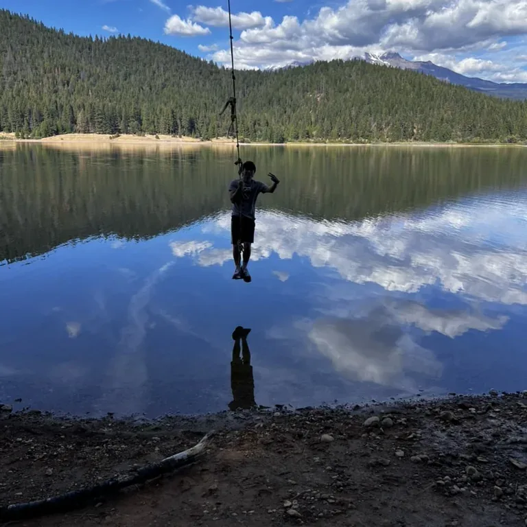
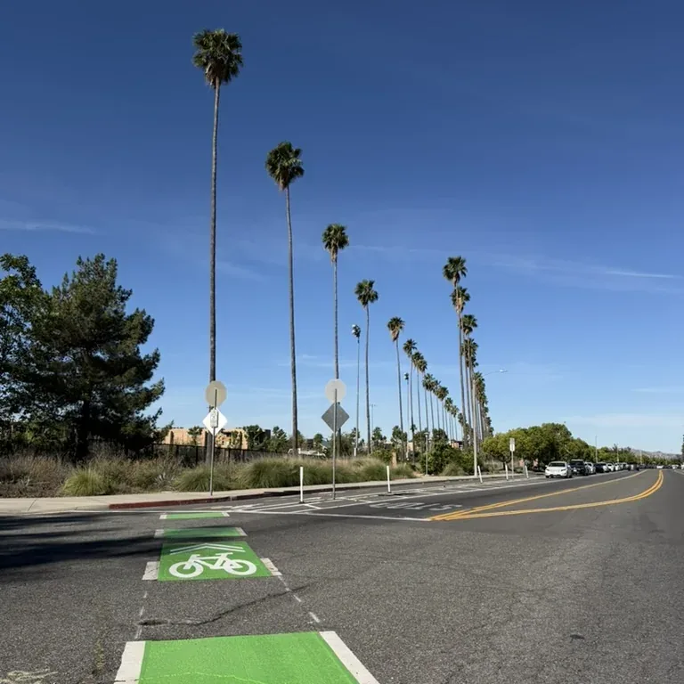
Every tool left the group out.
We started with what people already use. Roadtrippers, Roadie, and Google Maps are all great at routes and directions, but each assumes a single planner on a single path, with no room for a group to shape the trip together. To see how real that gap was, we surveyed and interviewed road trippers.
The interviews put a face to it. The friend who always ends up planning told us the hard part was never the route or the budget. It was getting everyone else to care as much as she did. I knew the feeling, because I’m usually that person, and it’s hard to hold a trip together when no one else feels any ownership.
She became Jasmine, our persona: 23, social, always up for a road trip and always the one organizing it. She wants trips worth remembering without carrying them alone, but watches the plan scatter across a Notes app and a group chat that never sync. What she needs is one place to build the trip and a way to pull her friends into it.
Jasmine set the brief. Bearings had to adapt to her from the first screen, hold the whole trip in one place, and leave real room for the group to shape it.
We moved from sketches to lo-fi to mid-fi, testing as we went. People kept looking for their group and their trip on the same screen, so we merged the two into a single shared hub.
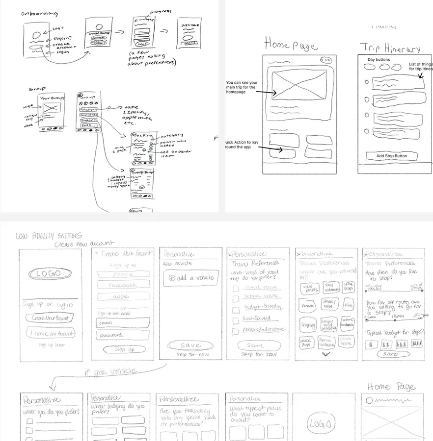
So we built one for the whole crew.
Everything the research surfaced became a requirement. Jasmine needed one place to build the trip and a way to pull friends into it, so that became the spine: onboarding that learns how she travels, five steps that turn an idea into a trip, and a shared page where the trip lives. I designed 28 of the final screens. These are the ones that carry the story.
The hardest part was never the screens, it was us. My team came from different design backgrounds, rarely felt on the same page, and our instinct was to add everything. I could see the scope getting away from us, so I pushed us toward the flows that actually mattered. For me, a lot of design comes down to consistency: every page should feel sewn from the same yarn. So I took it on myself to build shared components for the team, not to override anyone, but to give us one direction to move in together. When our design lead stepped away, I started running the discussions after our meetings, leaving notes on my teammates’ work about what was landing and what wasn’t. I was that vocal because I was set on making something I could be proud to put here. I am.
The best calls were the ones to cut.
I don’t design in a straight line. I pull a wall of references into Figma, chase a mood, and start building, and then, every single time, an idea hits mid-build and I end up somewhere completely different from where I started. I love that. It’s where most of the good work comes from.
It’s also how I fell for a paper-collage direction: hand-torn cars and characters with real texture and imperfection, buttons that felt handmade. I was attached to them. But the more I built, the more the app tipped childlike, away from the premium feel I was after. So I scrapped the style, characters and all, even though it stung.
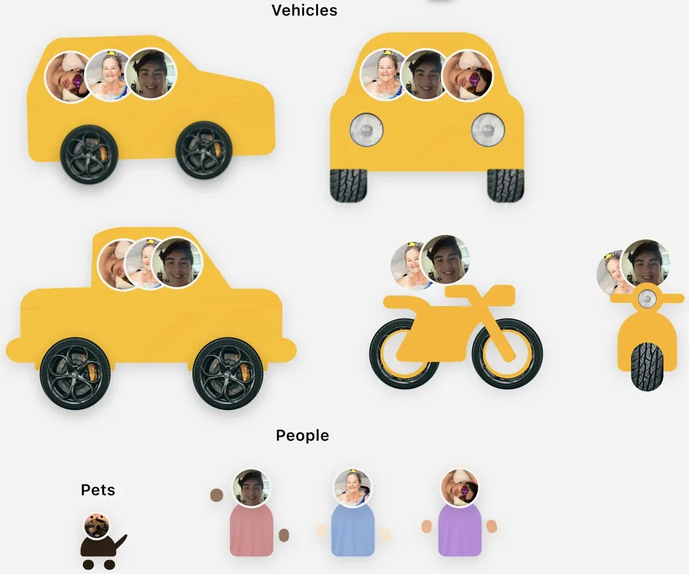
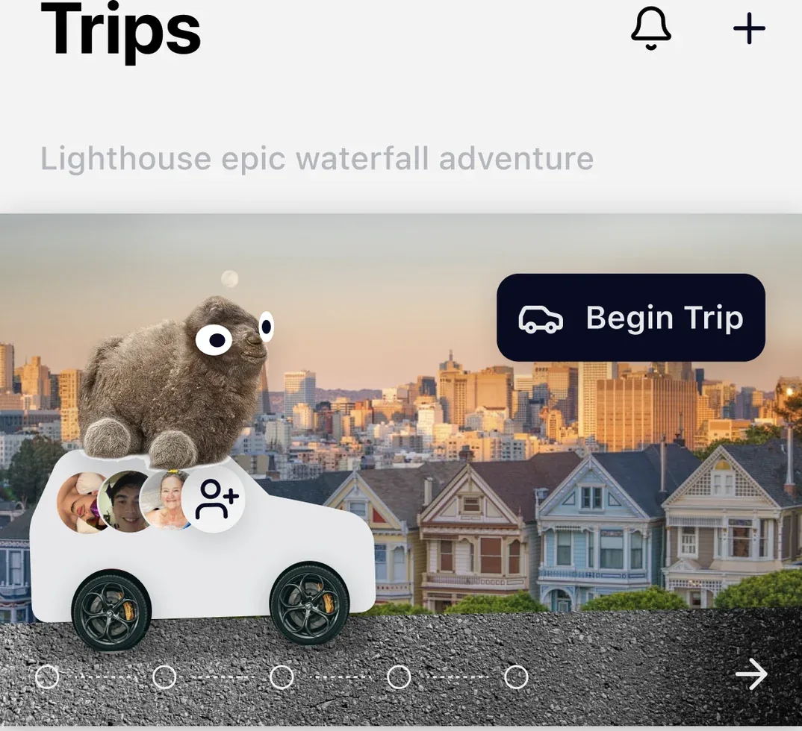
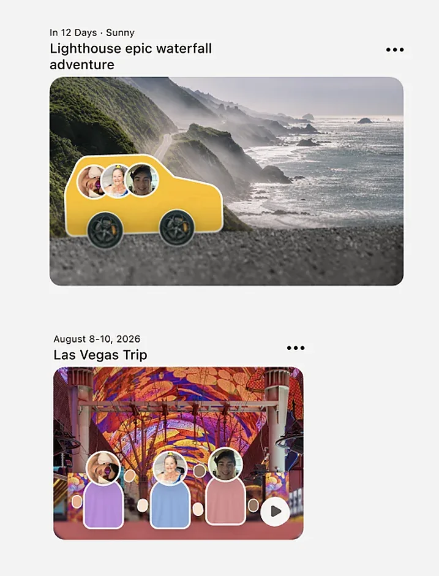
The smaller calls went the same way. I’d leaned on drop shadows to make things feel pressable, but testing kept coming back calling them tacky and inconsistent, so they went. And I badly wanted a Spotify-Wrapped-style trip recap, but with five weeks including research, it couldn’t earn its place over the flows that actually make the app work. Focus over fun.
The feeling comes before the form.
I saw the first screens as a chance to set the tone. Instead of dropping people into a form, I opened on real photos of friends on real road trips under one line, Roadtrips Made Together, so you feel what Bearings is for before you touch a field.
From there I kept it easy and intuitive: a few quick questions about how she travels, one at a time, each sharpening what Bearings suggests on the road. And I moved account creation to the very end on purpose, since asking someone to sign up before they’ve felt the product is a well-documented way to lose them, and deferring it can lift completion by 10 to 30 percent. Jasmine explores first, and commits once she’s already in.
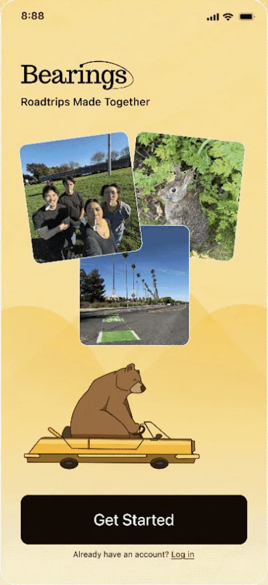
WelcomeGet started, then allow location so nearby stops surface.
Five steps against eighteen hours.
Planning eats eighteen hours because every decision lives in a different app, so I collapsed it into five clear steps. I put the most care into the paper map at the center, I wanted planning to feel playful but premium, like part of the trip instead of a chore. Yellow carries through the whole flow as the accent, never enough to overwhelm, just enough to feel unmistakably Bearings.
This screen is the whole case for Bearings, so it’s the one I sweated most. The research kept telling me a group falls apart without a shared place, so I made the trip itself that place. The route sits up top where everyone can see it, and below it are the things groups actually fight over: where to eat becomes a quick poll, the bill splits itself as you go, and the itinerary bends the second plans change. The road trip games I added just because they’d make me smile on a long drive.
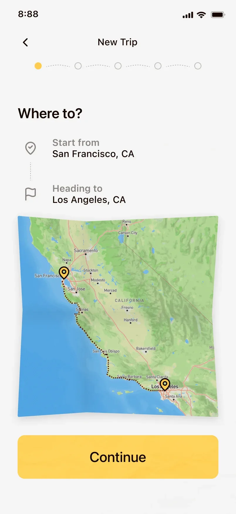
Step 1 · Where to?Start and end. Two fields, no tabs.
Road trips are fun. Now the planning is too.
Bearings took the Audience Choice Award at our showcase, and judges from LinkedIn and ServiceNow singled out its brand identity. Still, the numbers I actually care about are tied to the problem. It hasn’t shipped yet, so those are the first things I’d instrument: planning time dropping from eighteen hours toward minutes, the whole group contributing instead of one person, and a plan that holds together instead of falling apart.
There’s more to build. A recap page to relive the trip once it’s over, a light badge system to make planning feel rewarding, and the truest test of all, taking Bearings on a real road trip to see where it holds and where it breaks.
The biggest lesson was that designing for a group is a different problem than designing for a person. The hard part was never the interface. It was getting everyone to care, and that shaped how I approached every screen.
What I’m proudest of isn’t the award, it’s the voice I found. When we lost direction, I could have given up, but I stood up, ran the discussions, and gave real feedback on my teammates’ work. It grew me as a designer, and helped a friend and teammate push his own designs further. Giving feedback I believed in, built from everything I’d studied about UX, is when this stopped feeling like practice and started feeling like the work I want to do.
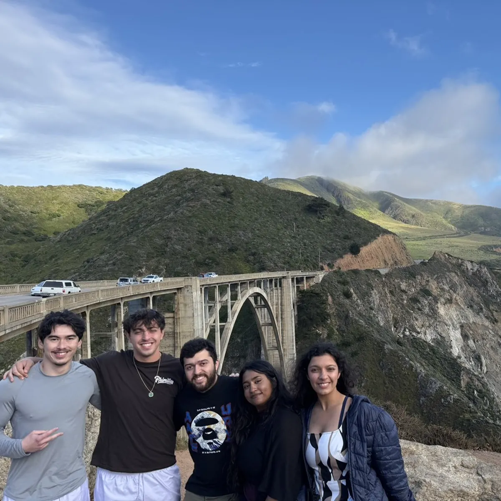
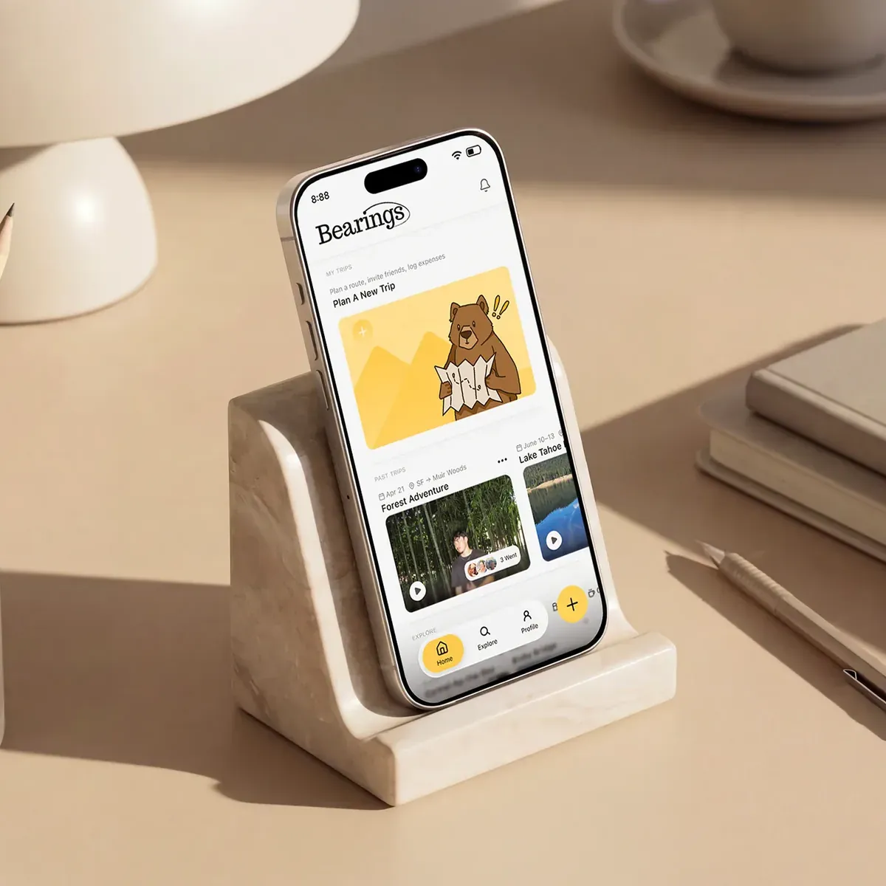